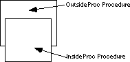
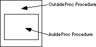
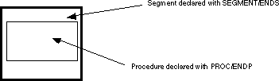
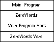

| Table of Content | Chapter Eleven (Part 2) |
|
| Table of Content | Chapter Eleven (Part 2) |
|
| CHAPTER
ELEVEN: PROCEDURES AND FUNCTIONS (Part 1) |
||
| 11.0 -
Chapter Overview 11.1 - Procedures 11.2 - Near and Far Procedures 11.2.1 - Forcing NEAR or FAR CALLs and Returns 11.2.2 - Nested Procedures 11.3 - Functions 11.4 - Saving the State of the Machine 11.5 - Parameters 11.5.1 - Pass by Value 11.5.2 - Pass by Reference 11.5.3 - Pass by Value-Returned 11.5.4 - Pass by Result 11.5.5 - Pass by Name 11.5.6 - Pass by Lazy-Evaluation 11.5.7 - Passing Parameters in Registers 11.5.8 - Passing Parameters in Global Variables 11.5.9 - Passing Parameters on the Stack 11.5.10 - Passing Parameters in the Code Stream 11.5.11 - Passing Parameters via a Parameter Block 11.6 - Function Results 11.6.1 - Returning Function Results in a Register 11.6.2 - Returning Function Results on the Stack 11.6.3 - Returning Function Results in Memory Locations 11.7 - Side Effects 11.8 - Local Variable Storage 11.9 - Recursion 11.10 - Sample Program |
Copyright 1996 by Randall Hyde
All rights reserved. Duplication other than for immediate display through a browser is prohibited by U.S. Copyright Law. This material is provided on-line as a beta-test of this text. It is for the personal use of the reader only. If you are interested in using this material as part of a course, please contact rhyde@cs.ucr.edu Supporting software and other materials are available via anonymous ftp from ftp.cs.ucr.edu. See the "/pub/pc/ibmpcdir" directory for details. You may also download the material from "Randall Hyde's Assembly Language Page" at URL: http://webster.ucr.edu Notes: This document does not contain the laboratory exercises, programming assignments, exercises, or chapter summary. These portions were omitted for several reasons: either they wouldn't format properly, they contained hyperlinks that were too much work to resolve, they were under constant revision, or they were not included for security reasons. Such omission should have very little impact on the reader interested in learning this material or evaluating this document. This document was prepared using Harlequin's Web Maker 2.2 and Quadralay's Webworks Publisher. Since HTML does not support the rich formatting options available in Framemaker, this document is only an approximation of the actual chapter from the textbook. If you are absolutely dying to get your hands on a version other than HTML, you might consider having the UCR Printing a Reprographics Department run you off a copy on their Xerox machines. For details, please read the following EMAIL message I received from the Printing and Reprographics Department:
We are currently working on ways to publish this text in a form other than HTML (e.g., Postscript, PDF, Frameviewer, hard copy, etc.). This, however, is a low-priority project. Please do not contact Randall Hyde concerning this effort. When something happens, an announcement will appear on "Randall Hyde's Assembly Language Page." Please visit this WEB site at http://webster.ucr.edu for the latest scoop. Redesigned 10/2000 with "MS FrontPage 98" using
17" monitor 1024x768 |
|
Modular design is one of the cornerstones of structured programming. A modular program contains blocks of code with single entry and exit points. You can reuse well written sections of code in other programs or in other sections of an existing program. If you reuse an existing segment of code, you needn't design, code, nor debug that section of code since (presumably) you've already done so. Given the rising costs of software development, modular design will become more important as time passes.
The basic unit of a modular program is the module. Modules have different meanings to different people, herein you can assume that the terms module, subprogram, subroutine, program unit, procedure, and function are all synonymous.
The procedure is the basis for a programming style. The procedural languages include Pascal, BASIC, C++, FORTRAN, PL/I, and ALGOL. Examples of non-procedural languages include APL, LISP, SNOBOL4 ICON, FORTH, SETL, PROLOG, and others that are based on other programming constructs such as functional abstraction or pattern matching. Assembly language is capable of acting as a procedural or non-procedural language. Since you're probably much more familiar with the procedural programming paradigm this text will stick to simulating procedural constructs in 80x86 assembly language.
This chapter presents an introduction to procedures and functions in assembly language. It discusses basic principles, parameter passing, function results, local variables, and recursion. You will use most of the techniques this chapter discusses in typical assembly language programs. The discussion of procedures and functions continues in the next chapter; that chapter discusses advanced techniques that you will not commonly use in assembly language programs. The sections below that have a "*" prefix are essential. Those sections with a "o" discuss advanced topics that you may want to put off for a while.
* Procedures.
* Near and far procedures.
* Functions
* Saving the state of the machine
* Parameters
* Pass by value parameters.
* Pass by reference parameters.
o Pass by value-returned parameters.
o Pass by result parameters.
o Pass by name parameters.
* Passing parameters in registers.
* Passing parameters in global variables.
* Passing parameters on the stack.
* Passing parameters in the code stream.
o Passing parameters via a parameter block.
* Function results.
* Returning function results in a register.
* Returning function results on the stack.
* Returning function results in memory locations.
* Side effects.
o Local variable storage.
o Recursion.
In a procedural environment, the basic unit of code is the procedure. A procedure is a set of instructions that compute some value or take some action (such as printing or reading a character value). The definition of a procedure is very similar to the definition of an algorithm. A procedure is a set of rules to follow which, if they conclude, produce some result. An algorithm is also such a sequence, but an algorithm is guaranteed to terminate whereas a procedure offers no such guarantee.
Most procedural programming languages implement procedures
using the call/return mechanism. That is, some code calls a procedure, the procedure does
its thing, and then the procedure returns to the caller. The call and return instructions
provide the 80x86's procedure invocation mechanism. The calling code calls a procedure
with the call instruction, the procedure returns to the caller with the ret
instruction. For example, the following 80x86 instruction calls the UCR Standard Library sl_putcr
routine[1]:
call sl_putcr
sl_putcr
prints a carriage return/line feed sequence
to the video display and returns control to the instruction immediately following the call
sl_putcr instruction.
Alas, the UCR Standard Library does not supply all the
routines you will need. Most of the time you'll have to write your own procedures. A
simple procedure may consist of nothing more than a sequence of instructions ending with a
ret instruction. For example, the following "procedure" zeros out
the 256 bytes starting at the address in the bx register:
ZeroBytes: xor ax, ax
mov cx, 128
ZeroLoop: mov [bx], ax
add bx, 2
loop ZeroLoop
ret
By loading the bx register with the address of
some block of 256 bytes and issuing a call ZeroBytes instruction, you can
zero out the specified block.
As a general rule, you won't define your own procedures in
this manner. Instead, you should use MASM's proc and endp
assembler directives. The ZeroBytes routine, using the proc and endp
directives, is
ZeroBytes proc
xor ax, ax
mov cx, 128
ZeroLoop: mov [bx], ax
add bx, 2
loop ZeroLoop
ret
ZeroBytes endp
Keep in mind that proc and endp
are assembler directives. They do not generate any code. They're simply a mechanism to
help make your programs easier to read. To the 80x86, the last two examples are identical;
however, to a human being, latter is clearly a self-contained procedure, the other could
simply be an arbitrary set of instructions within some other procedure. Consider now the
following code:
ZeroBytes: xor ax, ax
jcxz DoFFs
ZeroLoop: mov [bx], ax
add bx, 2
loop ZeroLoop
ret
DoFFs: mov cx, 128
mov ax, 0ffffh
FFLoop: mov [bx], ax
sub bx, 2
loop FFLoop
ret
Are there two procedures here or just one? In other words,
can a calling program enter this code at labels ZeroBytes and DoFFs
or just at ZeroBytes? The use of the proc and endp
directives can help remove this ambiguity:
Treated as a single subroutine:
ZeroBytes proc
xor ax, ax
jcxz DoFFs
ZeroLoop: mov [bx], ax
add bx, 2
loop ZeroLoop
ret
DoFFs: mov cx, 128
mov ax, 0ffffh
FFLoop: mov [bx], ax
sub bx, 2
loop FFLoop
ret
ZeroBytes endp
Treated as two separate routines:
ZeroBytes proc
xor ax, ax
jcxz DoFFs
ZeroLoop: mov [bx], ax
add bx, 2
loop ZeroLoop
ret
ZeroBytes endp
DoFFs proc
mov cx, 128
mov ax, 0ffffh
FFLoop: mov [bx], ax
sub bx, 2
loop FFLoop
ret
DoFFs endp
Always keep in mind that the proc and endp directives are logical procedure separators. The 80x86 microprocessor returns from a procedure by executing a ret instruction, not by encountering an endp directive. The following is not equivalent to the code above:
ZeroBytes proc
xor ax, ax
jcxz DoFFs
ZeroLoop: mov [bx], ax
add bx, 2
loop ZeroLoop
; Note missing RET instr.
ZeroBytes endp
DoFFs proc
mov cx, 128
mov ax, 0ffffh
FFLoop: mov [bx], ax
sub bx, 2
loop FFLoop
; Note missing RET instr.
DoFFs endp
Without the ret instruction at the end of each procedure, the 80x86 will fall into the next subroutine rather than return to the caller. After executing ZeroBytes above, the 80x86 will drop through to the DoFFs subroutine (beginning with the mov cx, 128 instruction). Once DoFFs is through, the 80x86 will continue execution with the next executable instruction following DoFFs' endp directive.
An 80x86 procedure takes the form:
ProcName proc {near|far} ;Choose near, far, or neither.
<Procedure instructions>
ProcName endp
The near or far operand is
optional, the next section will discuss its purpose. The procedure name must be on the
both proc and endp lines. The procedure name must be unique in
the program.
Every proc directive must have a matching endp
directive. Failure to match the proc and endp directives will
produce a block nesting error.
The 80x86 supports near and far subroutines. Near calls and
returns transfer control between procedures in the same code segment. Far calls and
returns pass control between different segments. The two calling and return mechanisms
push and pop different return addresses. You generally do not use a near call
instruction to call a far procedure or a far call instruction to call a near
procedure. Given this little rule, the next question is "how do you control the
emission of a near or far call or ret?".
Most of the time, the call instruction uses
the following syntax:
call ProcName
and the ret instruction is either[2]:
ret or ret disp
Unfortunately, these instructions do not tell MASM if you
are calling a near or far procedure or if you are returning from a near or far procedure.
The proc directive handles that chore. The proc directive has an
optional operand that is either near or far. Near
is the default if the operand field is empty[3]. The assembler
assigns the procedure type (near or far) to the symbol. Whenever MASM assembles a call
instruction, it emits a near or far call depending on operand. Therefore, declaring a
symbol with proc or proc near, forces a near call. Likewise,
using proc far, forces a far call.
Besides controlling the generation of a near or far call, proc's
operand also controls ret code generation. If a procedure has the near
operand, then all return instructions inside that procedure will be near. MASM emits far
returns inside far procedures.
11.2.1 Forcing NEAR or FAR CALLs and Returns
Once in a while you might want to override the near/far declaration mechanism. MASM provides a mechanism that allows you to force the use of near/far calls and returns.
Use the near ptr and far
ptr operators to override the automatic assignment of a near or far call.
If NearLbl is a near label and FarLbl is a far label, then the
following call instructions generate a near and far call, respectively:
call NearLbl ;Generates a NEAR call.
call FarLbl ;Generates a FAR call.
Suppose you need to make a far call to NearLbl
or a near call to FarLbl. You can accomplish this using the following
instructions:
call far ptr NearLbl ;Generates a FAR call.
call near ptr FarLbl ;Generates a NEAR call.
Calling a near procedure using a far call, or calling a far procedure using a near call isn't something you'll normally do. If you call a near procedure using a far call instruction, the near return will leave the cs value on the stack. Generally, rather than:
call far ptr NearProc
you should probably use the clearer code:
push cs
call NearProc
Calling a far procedure with a near call is a
very dangerous operation. If you attempt such a call, the current cs value
must be on the stack. Remember, a far ret pops a segmented return address off
the stack. A near call instruction only pushes the offset, not the segment
portion of the return address.
Starting with MASM v5.0, there are explicit instructions
you can use to force a near or far ret. If ret appears within a
procedure declared via proc and end;, MASM will automatically
generate the appropriate near or far return instruction. To accomplish this, use the retn
and retf instructions. These two instructions generate a near and far ret,
respectively.
MASM allows you to nest procedures. That is, one procedure definition may be totally enclosed inside another. The following is an example of such a pair of procedures:
OutsideProc proc near
jmp EndofOutside
InsideProc proc near
mov ax, 0
ret
InsideProc endp
EndofOutside: call InsideProc
mov bx, 0
ret
OutsideProc endp
Unlike some high level languages, nesting procedures in
80x86 assembly language doesn't serve any useful purpose. If you nest a procedure (as with
InsideProc above), you'll have to code an explicit jmp around
the nested procedure. Placing the nested procedure after all the code in the outside
procedure (but still between the outside proc/endp directives)
doesn't accomplish anything. Therefore, there isn't a good reason to nest procedures in
this manner.
Whenever you nest one procedure within another, it must be
totally contained within the nesting procedure. That is, the proc and endp
statements for the nested procedure must lie between the proc and endp
directives of the outside, nesting, procedure. The following is not legal:
OutsideProc proc near
.
.
.
InsideProc proc near
.
.
.
OutsideProc endp
.
.
.
InsideProc endp
The OutsideProc and InsideProc
procedures overlap, they are not nested. If you attempt to create a set of procedures like
this, MASM would report a "block nesting error". The figure below demonstrates
this graphically:

The only form acceptable to MASM is

Besides fitting inside an enclosing procedure, proc/endp
groups must fit entirely within a segment. Therefore the following code is illegal:
cseg segment
MyProc proc near
ret
cseg ends
MyProc endp
The endp directive must appear before the cseg
ends statement since MyProc begins inside cseg.
Therefore, procedures within segments must always take the form shown below:

Not only can you nest procedures inside other procedures and segments, but you can nest segments inside other procedures and segments as well. If you're the type who likes to simulate Pascal or C procedures in assembly language, you can create variable declaration sections at the beginning of each procedure you create, just like Pascal:
cgroup group cseg1, cseg2
cseg1 segment para public 'code'
cseg1 ends
cseg2 segment para public 'code'
cseg2 ends
dseg segment para public 'data'
dseg ends
cseg1 segment para public 'code'
assume cs:cgroup, ds:dseg
MainPgm proc near
; Data declarations for main program:
dseg segment para public 'data'
I word ?
J word ?
dseg ends
; Procedures that are local to the main program:
cseg2 segment para public 'code'
ZeroWords proc near
; Variables local to ZeroBytes:
dseg segment para public 'data'
AXSave word ?
BXSave word ?
CXSave word ?
dseg ends
; Code for the ZeroBytes procedure:
mov AXSave, ax
mov CXSave, cx
mov BXSave, bx
xor ax, ax
ZeroLoop: mov [bx], ax
inc bx
inc bx
loop ZeroLoop
mov ax, AXSave
mov bx, BXSave
mov cx, CXSave
ret
ZeroWords endp
Cseg2 ends
; The actual main program begins here:
mov bx, offset Array
mov cx, 128
call ZeroWords
ret
MainPgm endp
cseg1 ends
end
The system will load this code into memory as shown below:

ZeroWords follows the main program because it
belongs to a different segment (cseg2) than MainPgm (cseg1).
Remember, the assembler and linker combine segments with the same class name into a single
segment before loading them into memory (see Chapter Eight for more details). You can use
this feature of the assembler to "pseudo-Pascalize" your code in the fashion
shown above. However, you'll probably not find your programs to be any more readable than
using the straight forward non-nesting approach.
The difference between functions and procedures in assembly
language is mainly a matter of definition. The purpose for a function is to return some
explicit value while the purpose for a procedure is to execute some action. To declare a
function in assembly language, use the proc/endp directives. All the rules
and techniques that apply to procedures apply to functions. This text will take another
look at functions later in this chapter in the section on function results. From here on,
procedure will mean procedure or function.
Take a look at this code:
mov cx, 10
Loop0: call PrintSpaces
putcr
loop Loop0
.
.
.
PrintSpaces proc near
mov al, ' '
mov cx, 40
PSLoop: putc
loop PSLoop
ret
PrintSpaces endp
This section of code attempts to print ten lines of 40
spaces each. Unfortunately, there is a subtle bug that causes it to print 40 spaces per
line in an infinite loop. The main program uses the loop instruction to call PrintSpaces
10 times. PrintSpaces uses cx to count off the 40 spaces it
prints. PrintSpaces returns with cx containing zero. The main
program then prints a carriage return/line feed, decrements cx, and then
repeats because cx isn't zero (it will always contain 0FFFFh at this point).
The problem here is that the PrintSpaces
subroutine doesn't preserve the cx register. Preserving a register means you
save it upon entry into the subroutine and restore it before leaving. Had the PrintSpaces
subroutine preserved the contents of the cx register, the program above would
have functioned properly.
Use the 80x86's push and pop
instructions to preserve register values while you need to use them for something else.
Consider the following code for
PrintSpaces:
PrintSpaces proc near
push ax
push cx
mov al, ' '
mov cx, 40
PSLoop: putc
loop PSLoop
pop cx
pop ax
ret
PrintSpaces endp
Note that PrintSpaces saves and restores ax
and cx (since this procedure modifies these registers). Also, note that this
code pops the registers off the stack in the reverse order that it pushed them. The
operation of the stack imposes this ordering.
Either the caller (the code containing the call
instruction) or the callee (the subroutine) can take responsibility for preserving the
registers. In the example above, the callee preserved the registers. The following example
shows what this code might look like if the caller preserves the registers:
mov cx, 10
Loop0: push ax
push cx
call PrintSpaces
pop cx
pop ax
putcr
loop Loop0
.
.
.
PrintSpaces proc near
mov al, ' '
mov cx, 40
PSLoop: putc
loop PSLoop
ret
PrintSpaces endp
There are two advantages to callee preservation: space and maintainability. If the callee preserves all affected registers, then there is only one copy of the push and pop instructions, those the procedure contains. If the caller saves the values in the registers, the program needs a set of push and pop instructions around every call. Not only does this make your programs longer, it also makes them harder to maintain. Remembering which registers to push and pop on each procedure call is not something easily done.
On the other hand, a subroutine may unnecessarily preserve
some registers if it preserves all the registers it modifies. In the examples above, the
code needn't save ax. Although PrintSpaces changes the al,
this won't affect the program's operation. If the caller is preserving the registers, it
doesn't have to save registers it doesn't care about:
mov cx, 10
Loop0: push cx
call PrintSpaces
pop cx
putcr
loop Loop0
putcr
putcr
call PrintSpaces
mov al, '*'
mov cx, 100
Loop1: putc
push ax
push cx
call PrintSpaces
pop cx
pop ax
putc
putcr
loop Loop1
.
.
.
PrintSpaces proc near
mov al, ' '
mov cx, 40
PSLoop: putc
loop PSLoop
ret
PrintSpaces endp
This example provides three different cases. The first loop
(Loop0) only preserves the cx register. Modifying the al
register won't affect the operation of this program. Immediately after the first loop,
this code calls PrintSpaces again. However, this code doesn't save ax
or cx because it doesn't care if PrintSpaces changes them. Since
the final loop (Loop1) uses ax and cx, it saves
them both.
One big problem with having the caller preserve registers is that your program may change. You may modify the calling code or the procedure so that they use additional registers. Such changes, of course, may change the set of registers that you must preserve. Worse still, if the modification is in the subroutine itself, you will need to locate every call to the routine and verify that the subroutine does not change any registers the calling code uses.
Preserving registers isn't all there is to preserving the environment. You can also push and pop variables and other values that a subroutine might change. Since the 80x86 allows you to push and pop memory locations, you can easily preserve these values as well.
[1] Normally you
would use the putcr macro to accomplish this, but this call
instruction will accomplish the same thing.
[2] There are also retn and retf instructions.
[3] Unless you are using MASM's simplified segment directives. See the appendices for details.
| Table of Content | Chapter Eleven (Part 2) |
|
Chapter Eleven: Procedures and
Functions (Part 1)
27 SEP 1996